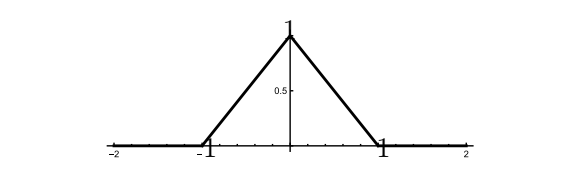
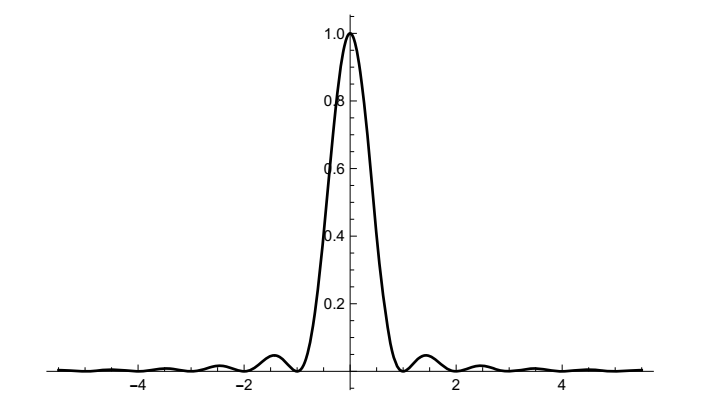
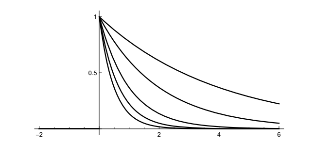
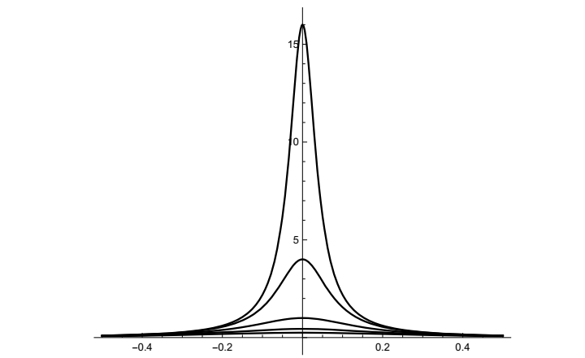
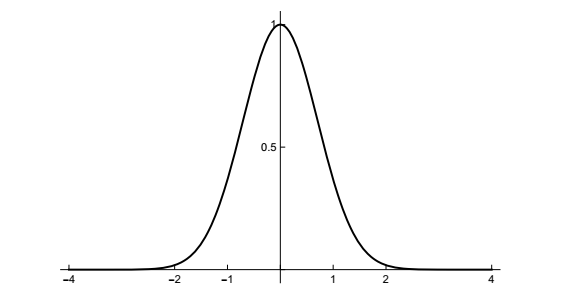

了解傅里叶变换
至少在某种程度上，我们对傅里叶变换的研究将与你们学习微积分的过程相同。你们学习微积分时，有必要学习特定函数以及各类函数（幂函数、指数函数、三角函数——社会所需的函数）的导数和积分公式，同时还要学习微分和积分的一般原理和规则，以便处理函数组合（乘积法则、链式法则、反函数）。现在对我们来说也是一样的。我们需要一个可以调用的特定函数及其变换的库，并且需要发展傅里叶变换如何运作的一般原理和结果。
一些具体变换
我们已经见过示例
\[\hat{\Pi}(s) = sinc\ s, \quad\text{or}\quad \mathcal{F}\Pi(s)=sinc\ s\quad \text{using the }\mathcal{F}\text{ notation}.\]
我们再举几个例子。
三角函数。接着考虑三角函数，定义为
\[\Lambda(x) = \begin{cases} & 1-|x|, \quad &|x|\le 1,\\ & 0, &\text{otherwise}.\end{cases}\]
如图所示。

在关于周期化的问题1.7中，您使用了三角形函数及其缩放版本。
对于傅里叶变换，
\[\mathcal{F}\Lambda(s) = \int_{-\infty}^{\infty}\Lambda(x)e^{-2\pi isx}\ dx = \int_{-1}^0 (1+x)e^{-2\pi isx}\ dx + \int_0^1(1-x)e^{-2\pi isx}\ dx.\]
需要按部分进行积分，如果你回顾我们在第1章中对三角波傅里叶系数的计算，类似的观察可以为我们节省一些工作。设\(A(s)\)为第一个积分，
\[A(s) = \int_{-1}^0 (1+x)e^{-2\pi isx}\ dx\ .\]
那么
\[A(-s) = \int_{-1}^0 (1+x)e^{2\pi isx}\ dx\]
变量u=-x的变化将其转化为
\[A(-s) = \int_1^0 (1-u)e^{-2\pi isu}(-du) = \int_0^1(1-u)e^{-2\pi isu}\ du.\]
因此
\[\mathcal{F}\Lambda (s) = A(s) + A(-s), \]
我们只需按部分进行积分，即可找到A（s）。为此，当\(u = 1 + x\)，\(dv = e^{-2\pi isx}\)时，我们得到
\[A(s) = -\frac{1}{2\pi is} + \frac{1}{4\pi^2s^2}(1-e^{2\pi is}).\]
那么
\begin{align} \mathcal{F}\Lambda(s) &= A(s) + A(-s)\\ &= \frac{2}{4\pi^2s^2} - \frac{e^{2\pi is}}{4\pi^2s^2} - \frac{2^{2\pi is}}{4\pi^2s^2}\\ &= (\frac{e^{\pi is}}{2\pi is})^2 - 2\frac{1}{2\pi is}\frac{1}{2\pi is} + (\frac{e^{-\pi is}}{2\pi is})^2\\ &= (\frac{e^{\pi is}}{2\pi is} - \frac{e^{-\pi is}}{2\pi is})^2 \quad (using\ (a-a^{-1})^2 = a^2 - 2 + a^{-2})\\ &= (\frac{1}{\pi}(\frac{e^{\pi is} - e^{-\pi is}}{2i}))^2\\ &= (\frac{sin\ \pi s}{\pi s})^2 = sinc^2\ s. \end{align}
三角函数的傅里叶变换最终是矩形函数傅里叶变换的平方，这绝非偶然。这与卷积有关，卷积运算我们在傅里叶级数中已经见过，下一章我们将在傅里叶变换中再次见到。
\(sinc^2\ s\)的图看起来像

指数衰减。另一个常见的函数是单侧指数衰减，定义如下
\[f(t) = \begin{cases} &0,\quad&t\le 0,\\ &e^{-at},&t\gt 0,\end{cases}\]
其中a是正常数。此函数模拟一个零信号，打开后呈指数衰减。以下是a=2、1.5、1.0、0.5、0.25的图表。

哪个是哪个？如果你不能区分，请参阅本节末尾关于缩放自变量的讨论。
回到指数衰减，我们可以直接计算其傅里叶变换：
\begin{align} \mathcal{F}f(s) &= \int_0^{\infty}e^{-2\pi ist}e^{-at}\ dt = \int_0^{\infty} e^{-2\pi ist - at}\ dt\\ &= \int_0^{\infty} e^{(-2\pi is-a)t}\ dt = \Big[\frac{e^{(-2\pi is - a)t}}{-2\pi is -a}\Big]_{t=0}^{t=\infty}\\ \end{align}
\[ \quad\quad= \frac{e^{(-2\pi is)t}}{-2\pi is - a}e^{-at}\Big|_{t=\infty} - \]
\[ \frac{e^{(-2\pi is -a)t}}{-2\pi is -a}\Big|_{t=0} = \frac{1}{2\pi is + a}\ . \]
在这种情况下，与直函数和三角函数的结果不同，傅里叶变换是复数的。\(\mathcal{F}\Pi(s)\)和\(\mathcal{F}\Lambda(s)\)是实数，因为\(\Pi(s)\)和\(\Lambda(s)\)是偶函数；我们很快就会讨论这个问题。指数衰减没有这种对称性。
指数衰减的功率谱为
\[|\mathcal{F}f(s)|^2 = \frac{1}{|2\pi is + a|^2} = \frac{1}{a^2 + 4\pi^2s^2}\ .\]
以下是与指数衰减函数图中a值相同的该函数图

哪个是哪个？你很快就会学会相对于时域中的图片立即发现这一点，这很重要。还要注意，\(\mathcal{F}f(s)|^2\)是s的偶函数，尽管\(\mathcal{F}f(s)\)不是。稍后我们会看到原因。\(\mathcal{F}f(s)|^2\)的形状是钟形曲线的形状，尽管它不是高斯函数，我们下面将讨论它。该曲线被称为洛伦兹轮廓（Lorentz profile），在分析原子中激发态的跃迁概率和寿命时出现。
**f(ax) 的图与 f(x) 的图相比如何？**让我来回顾一下函数中自变量缩放的一些基本知识。问题是，当 0 < a < 1 和 a > 1 时，f(ax) 的图与 f(x) 的图相比如何；我这里指的是任何泛型函数 f(x)。这非常简单，尤其是与我们已经做过的和我们将要做的相比，但你最好把它放在手边，每个人都需要花几秒钟来思考一下。以下是如何利用这几秒钟的方法。
例如，考虑 f(2x) 的图。与 f(x) 的图相比，f(2x) 的图是压缩的。为什么？想想当你在 −1 ≤ x ≤ 1 的区间上绘制 f(2x) 的图时会发生什么。当 x 从 −1 变为 1 时，2x 从 −2 变为 2，因此当你在 −1 到 1 的区间上绘制 f(2x) 时，你必须计算 f(x) 从 −2 到 2 的值。这相当于在更小的空间里绘制了更多的函数，所以 f(2x) 的图是 f(x) 图的压缩版本。明白了吗？
类似的推理表明，f(x/2) 的图是拉伸的。如果 x 从 −1 到 1，那么 x/2 就从 −1/2 到 1/2，因此，当你在 −1 到 1 的区间内绘制 f(x/2) 时，你必须计算 f(x) 从 −1/2 到 1/2 的值。这相当于在更大的空间中，函数的分量更少，所以 f(x/2) 的图是 f(x) 图的拉伸版本。
钟声为谁而鸣？
接下来让我们考虑高斯函数及其傅里叶变换。我们需要它来解决许多例子和问题。这个函数，即著名的钟形曲线，被高斯用于统计问题。它在傅里叶变换方面具有一些引人注目的特性，一方面使其在傅里叶分析中具有特殊作用，另一方面允许傅里叶方法应用于该函数出现的其他领域。我们将在第3章中看到概率论的应用。
基本高斯函数为\(f(x)= e^{−x^2}\)。图形的形状对您来说很熟悉：

在各种应用中，人们会引入额外的因子来修改函数的特定属性。我们也会这样做，但对于最佳方案尚无定论。人们一致认为，在发生任何其他事情之前，必须先知道这个神奇的方程
\[\int_{-\infty}^{\infty} e^{-x^2}\ dx = \sqrt{\pi}.\]
现在，函数 \(f(x) = e^{-x^2}\)没有基本不定积分，所以这个积分不能直接借助微积分基本定理求得。它能够被精确求值，这是数学中最著名的技巧之一。它源于欧拉，你不应该一辈子都没见过它。即使你见过，也值得再看一遍；请参阅本节之后的讨论。不过，首先要讲的是傅里叶变换。
高斯的傅里叶变换。无论应用何种主题，对高斯函数进行归一化处理，使总面积为1，似乎总是有用的。这可以通过多种方式实现，但对于傅里叶分析，我们将看到的最佳选择是
\[f(x) = e^{-\pi x^2}\ . \]
你可以使用\(e^{-x^2}\)积分的结果来检查
\[\int_{-\infty}^{\infty}e^{-\pi x^2} = 1\ .\]
让我们计算傅里叶变换
\[\mathcal{F}f(s) = \int_{-\infty}^{\infty} e^{-\pi x^2} e^{-2\pi isx}\ dx\ .\]
对s微分：
\[\frac{d}{ds}\mathcal{F}f(s) = \int_{-\infty}^{\infty}e^{-\pi x^2}(-2\pi ix)e^{2\pi isx}\ dx\ .\]
这对于分部积分来说完全成立，其中 \(dv = -2\pi ixe^{-\pi x^2}\)且 \(u = e^{−2\pi isx}\)。则 \(v = ie^{−\pi x^2}\)，在极限\(\pm \infty\)处求 uv 的乘积可得 0。因此
\begin{align} \frac{d}{ds}\mathcal{F}f(s) &= -\int_{-\infty}^{\infty}ie^{-\pi x^2}(-2\pi is)e^{-2\pi isx}\ dx\\ &= -2\pi s\int_{-\infty}^{\infty} e^{-\pi x^2}e^{-2\pi isx}\ dx\\ &= -2\pi s \mathcal{F}f(s). \end{align}
所以，\(\mathcal{F}f(s)\)满足简单微分方程
\[\frac{d}{ds} \mathcal{F}f(s) = -2\pi s\mathcal{F}f(s)\]
结合初始条件，其唯一解为
\[\mathcal{F}f(s) = \mathcal{F}f(0)e^{-\pi s^2}\ .\]
但
\[\mathcal{F}f(0) = \int_{-\infty}^{\infty} e^{-\pi x^2}\ dx= 1\ .\]
因此
\[\mathcal{F}f(s) = e^{-\pi s^2}\]
我们发现了一个显著的事实：高斯 \(f(x) = e^{−\pi x^2}\) 是其自身的傅里叶变换！
高斯积分的求值。我们想要计算
\[I = \int_{-\infty}^{\infty} e^{-x^2}\ dx\ .\]
积分变量是什么不重要，因此，我们可以将积分写为
\[I = \int_{-\infty}^{\infty} e^{-y^2}\ dy\ .\]
因此
\[I^2 = (\int_{-\infty}^{\infty} e^{-x^2}\ dx)(\int_{-\infty}^{\infty} e^{-y^2}\ dy)\ . \]
因为变量不耦合，我们可以将其组合成二重积分
\[\int_{-\infty}^{\infty}(\int_{-\infty}^{\infty} e^{-x^2} \ dx)e^{-y^2}\ dy = \int_{-\infty}^{\infty}\int_{-\infty}^{\infty}e^{-(x^2 + y^2)}\ dx\ dy\ .\]
现在我们变换变量，引入极坐标\((r,\theta)\)。首先，积分的极限如何？设 x 和 y 的值域均为 \(-\infty\) 到 \(\infty\)，即描述整个平面；而用极坐标描述整个平面，则 r 的值域为 0 到 \(\infty\)，θ 的值域为 0 到 \(2\pi\)。接下来，\(e^{−(x^2+y^2)}\) 变为 \(e^{-r^2}\)，面积元素 dx dy 变为 r dr dθ。面积元素中 r 这个额外的因子才是关键。换到极坐标系后，我们有
\[ I^2 = \int_{-\infty}^{\infty}\int_{-\infty}^{\infty}e^{-(x^2 + y^2)}\ dx\ dy = \int_0^{2\pi}\int_0^{\infty} e^{-r^2}\ r\ dr\ d\theta\ .\]
由于因子r，可以直接进行内部积分：
\[\int_0^{\infty} e^{-r^2}\ r\ dr = -\frac{1}{2}e^{-r^2}\Big]_0^{\infty} =\frac{1}{2}\ . \]
二重积分简化为
\[I^2 = \int_0^{2\pi}\frac{1}{2}\ d\theta = \pi,\]
由此
\[\int_{-\infty}^{\infty}e^{-x^2}\ dx = I = \sqrt{\pi}.\]
完美。
关于这些例子的最后一句话。你可能已经注意到，到目前为止，我们的列表还没有包括社会所需的许多基本功能。例如，正弦和余弦还没有出现，你不能得到比这更基本的东西了。这将不得不等待。从经典意义上讲，以下积分是没有意义的
\[\int_{-\infty}^{\infty}e^{-2\pi ist}\text{cos}\ 2\pi t\ dt, \quad \int_{-\infty}^{\infty}e^{-2\pi ist}\text{sin}\ 2\pi t\ dt \ .\]
需要一种完全不同的方法。
尽管如此，还有更多的例子可以做。你可以在网上找到汇编，Bracewell的书中有一非常有吸引力的“傅里叶变换图解词典”。